DevAssistant
个人开发效率工具
v1.0.20
Tauri
Rust
Vue3
TypeScript
Naive UI
DevAssistant 是一款专为开发者打造的个人效率工具，集成了任务管理、番茄钟、SQL历史记录、工作日志、应用启动器等多种实用功能。
智能任务管理
支持四象限分类、AI智能分类、任务预测
专注时钟
番茄工作法，帮助保持专注
SQL历史管理
自动记录SQL执行历史，方便查询复用
工作日志
日报、周报、周计划一站式管理
应用启动器
快速启动常用应用，支持工作流
AI助手
支持自定义AI服务，提供智能建议
任务管理
任务看板
任务看板是软件的核心功能，采用四象限法则对任务进行分类管理。

任务看板主界面 - 四象限任务分类展示
📌 功能说明
- 左侧导航栏可快速切换各功能模块
- 任务按照四象限（重要紧急、重要不紧急、不重要紧急、不重要不紧急）分类展示
- 支持拖拽调整任务所属象限
- 底部状态栏显示系统CPU和内存使用情况
- 支持快捷键
Ctrl + K快速搜索
新建任务
点击"新建任务"按钮，弹出任务创建窗口。

新建任务弹窗 - 支持AI智能分类
📌 功能说明
- 输入任务标题和描述
- AI智能分类：点击AI按钮，自动分析任务内容并推荐所属象限
- 设置任务优先级、截止日期、标签等属性
- 支持添加子任务和里程碑
任务悬浮窗
悬浮窗模式让您在进行其他工作时也能随时查看任务列表。

任务悬浮窗 - 精简的任务列表视图
任务日历
日历视图让您直观地看到任务在时间轴上的分布。
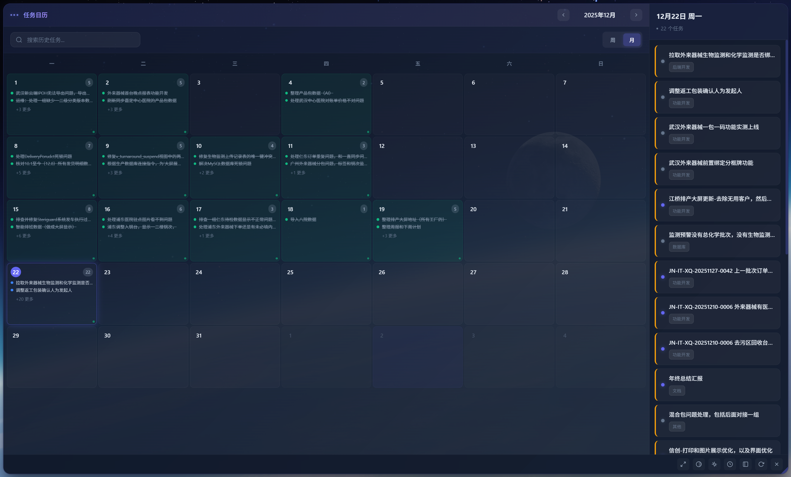
任务日历 - 月视图

任务日历 - 周视图
AI预测任务
基于您的工作习惯和历史数据，AI可以智能预测您可能需要处理的任务。
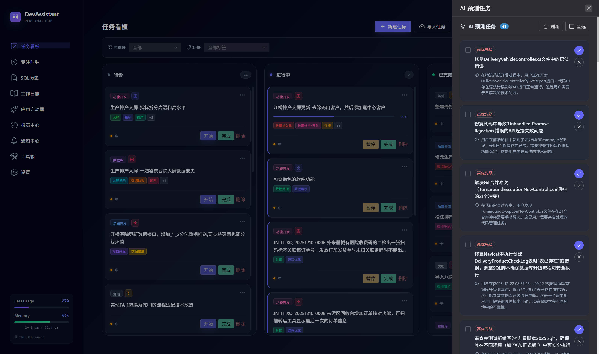
AI预测任务 - 智能识别潜在待办事项
任务操作
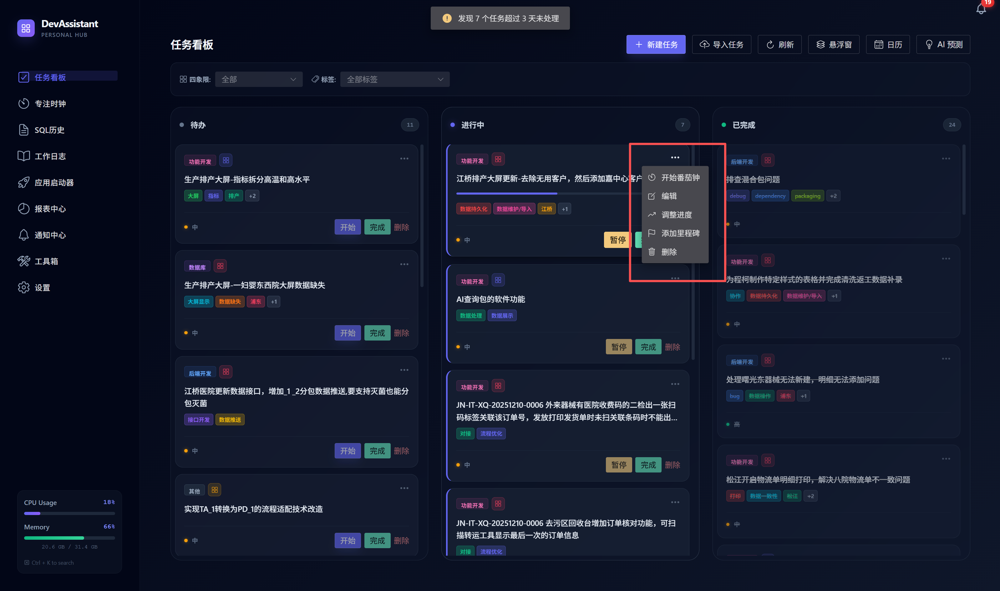
任务操作菜单
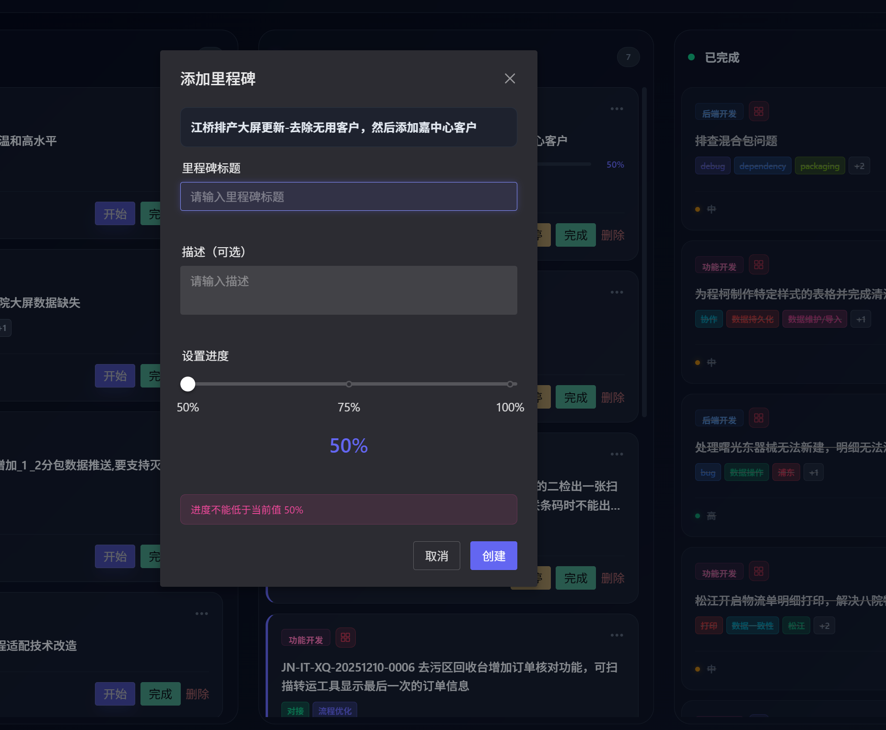
添加里程碑功能
专注时钟
专注时钟基于番茄工作法，帮助您保持工作专注。

专注时钟 - 番茄工作法
⏱️ 功能说明
- 可选择关联的任务
- 自定义专注时长（默认25分钟）
- 休息提醒功能
- 记录专注历史，生成统计报表
- 支持暂停和继续
SQL管理
自动记录您执行过的SQL语句，方便后续查询和复用。

SQL执行记录页面
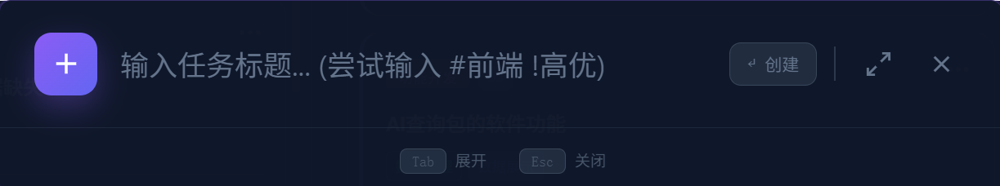
快速任务/SQL输入框
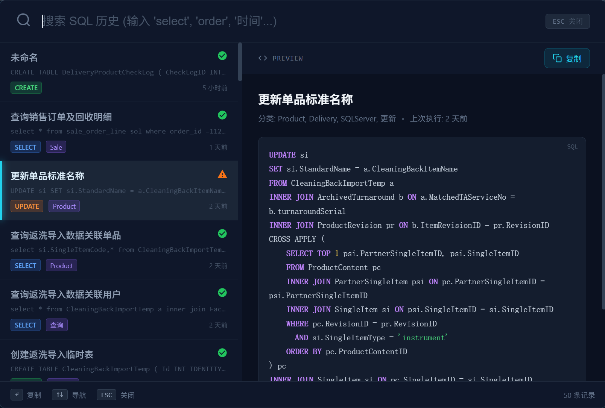
SQL搜索和预览
工作日志
工作日志帮助您记录每日工作内容，生成周报和周计划。
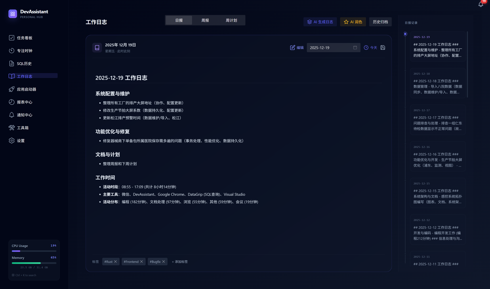
工作日志 - 日报视图

工作日志 - 周报视图

工作日志 - 周计划视图
应用启动器
快速启动常用应用程序，提高工作效率。

应用启动器 - 分类管理常用应用

添加应用弹窗
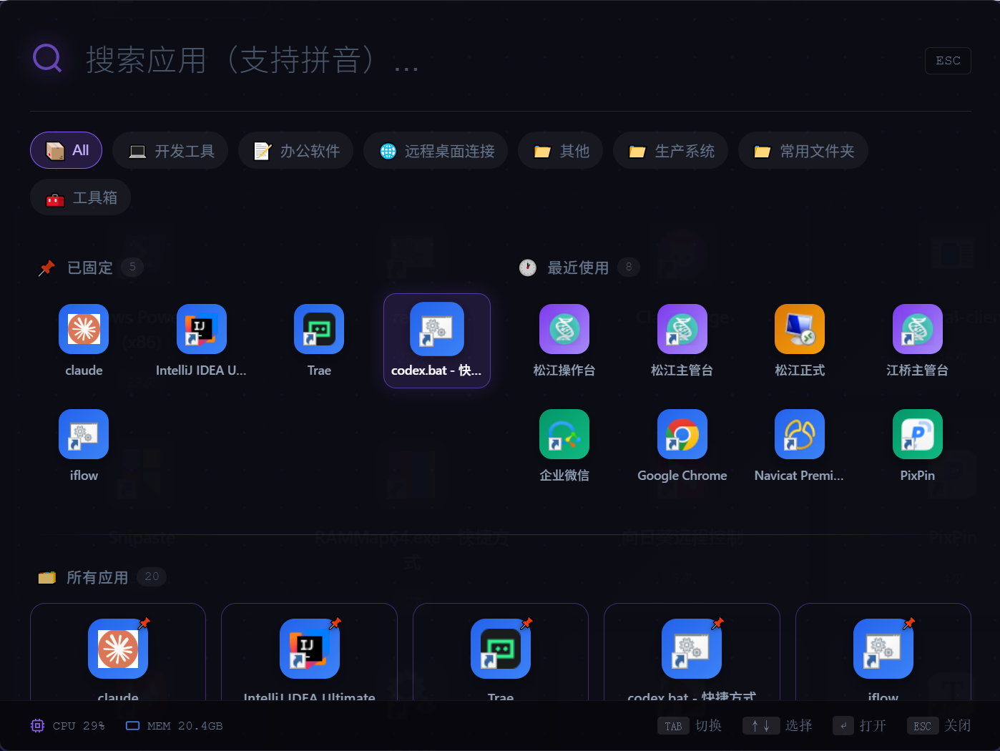
应用快捷搜索
报表中心
报表中心提供丰富的数据统计和可视化分析。
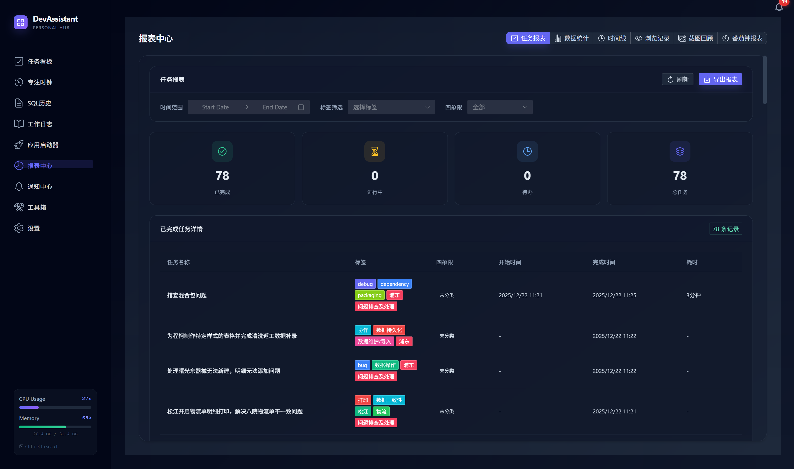
报表中心 - 任务报表
通知中心
集中管理所有系统通知和提醒。

通知中心 - 集中管理消息
工具箱
工具箱提供多种实用的开发工具。
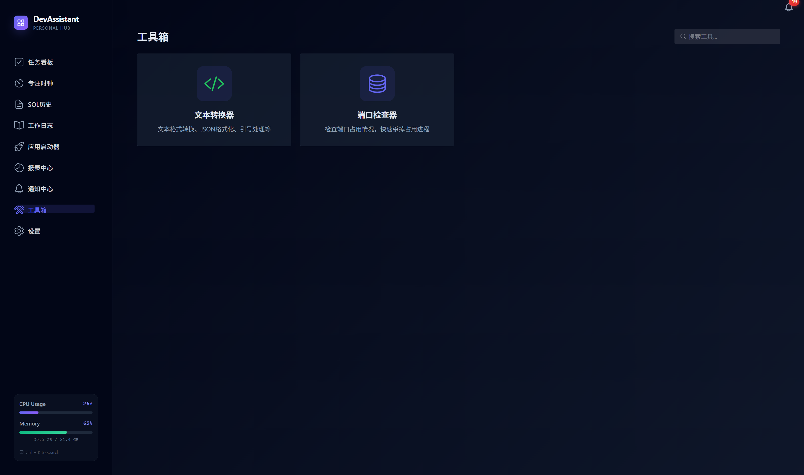
工具箱 - 实用开发工具集
文本转换器
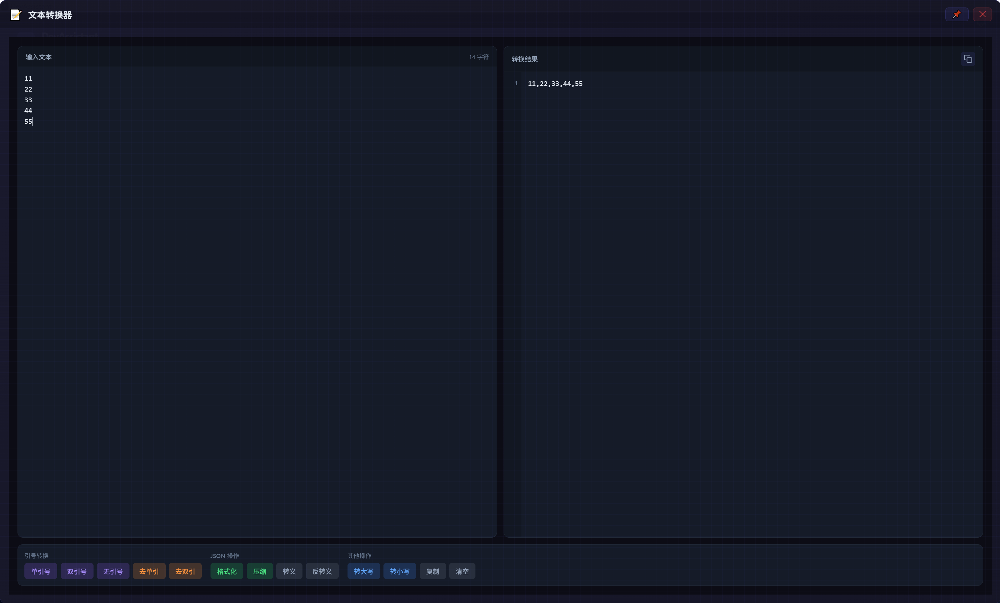
文本转换器 - 支持多种文本处理操作
🔧 功能说明
- 引号转换：单引号、双引号、去引号
- JSON操作：格式化、压缩、转义、反转义
- 其他操作：大小写转换、复制、清空
- 实时预览转换结果
系统设置
系统设置提供丰富的配置选项，满足个性化需求。
通用设置

通用设置 - 基础配置项
集成设置 / AI配置

集成设置 - AI智能助手配置
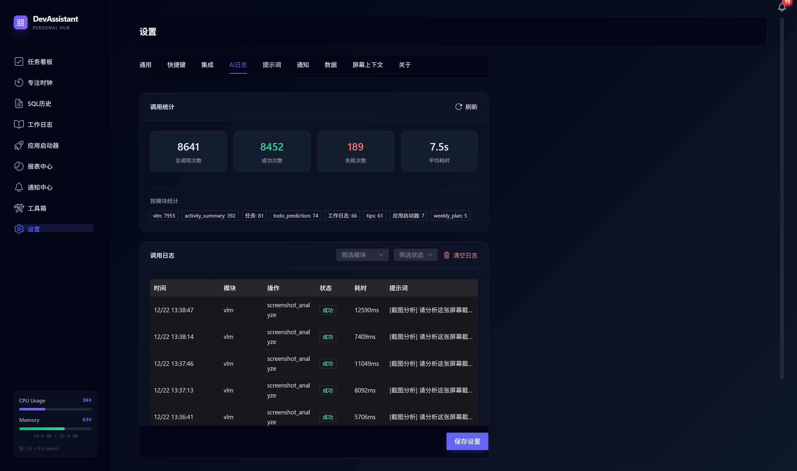
AI日志 - 调用统计和日志

提示词管理 - 自定义AI提示词
通知设置
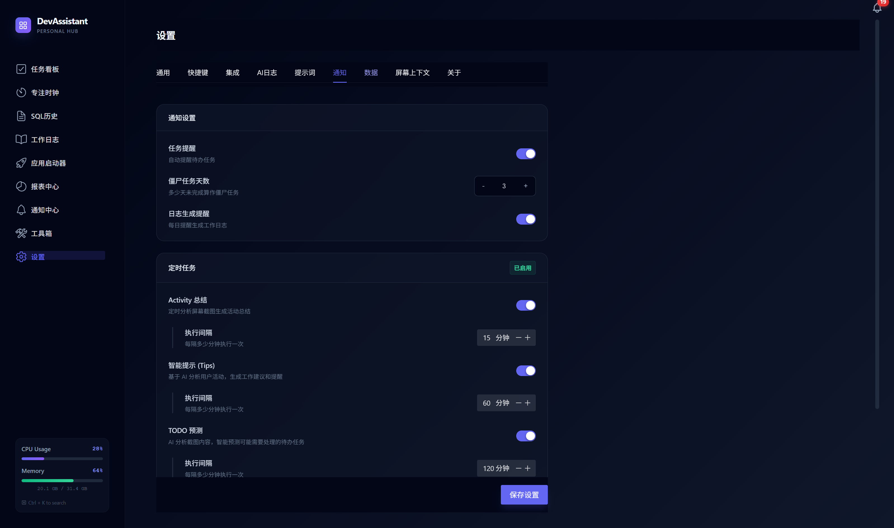
通知设置 - 定时任务配置
屏幕上下文
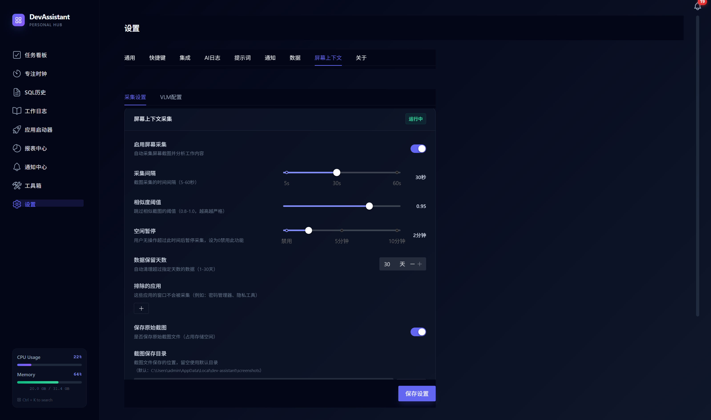
屏幕上下文 - 采集设置

VLM配置 - 视觉语言模型设置
关于

关于 - 版本信息和更新
快捷键说明
| 快捷键 | 功能 |
|---|---|
Ctrl + K |
全局搜索 |
Ctrl + N |
新建任务 |
Ctrl + Space |
唤起应用启动器搜索 |
Esc |
关闭弹窗 |
常见问题
Q: 如何配置AI功能？
A: 进入设置 > 集成，启用AI功能并配置API Key和Base URL。支持任何OpenAI兼容的API服务。
Q: 屏幕截图会占用很多存储空间吗？
A: 可以在设置 > 屏幕上下文中配置数据保留天数，系统会自动清理过期数据。
Q: 如何导出工作日志？
A: 在工作日志页面，点击导出按钮可将日报/周报导出为常用格式。